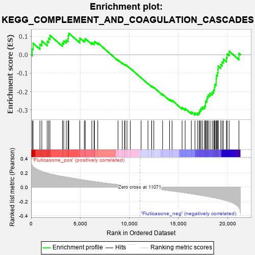

| | | Dataset | GSEA_expr_Flu.GSEA_timepoint.cls#Fluticasone |
| Phenotype | GSEA_timepoint.cls#Fluticasone |
| Upregulated in class | Fluticasone_neg |
| GeneSet | KEGG_COMPLEMENT_AND_COAGULATION_CASCADES |
| Enrichment Score (ES) | -0.32821915 |
| Normalized Enrichment Score (NES) | -1.2905774 |
| Nominal p-value | 0.1425532 |
| FDR q-value | 1.0 |
| FWER p-Value | 0.913 |
Table: GSEA Results Summary

Fig 1: Enrichment plot: KEGG_COMPLEMENT_AND_COAGULATION_CASCADES
Profile of the Running ES Score & Positions of GeneSet Members on the Rank Ordered List
| PROBE | DESCRIPTION
(from dataset) | GENE SYMBOL | GENE_TITLE | RANK IN GENE LIST | RANK METRIC SCORE | RUNNING ES | CORE ENRICHMENT | | 1 | MASP1 | NA | | | 116 | 0.304 | 0.0314 | No |
| 2 | C8B | NA | | | 202 | 0.285 | 0.0620 | No |
| 3 | F13A1 | NA | | | 898 | 0.230 | 0.0571 | No |
| 4 | PLAUR | NA | | | 1090 | 0.219 | 0.0747 | No |
| 5 | C8G | NA | | | 1637 | 0.197 | 0.0729 | No |
| 6 | C1QC | NA | | | 1792 | 0.190 | 0.0887 | No |
| 7 | SERPIND1 | NA | | | 1919 | 0.185 | 0.1052 | No |
| 8 | C1QB | NA | | | 3191 | 0.149 | 0.0634 | No |
| 9 | F3 | NA | | | 3320 | 0.146 | 0.0751 | No |
| 10 | TFPI | NA | | | 3582 | 0.140 | 0.0797 | No |
| 11 | C1QA | NA | | | 3765 | 0.136 | 0.0876 | No |
| 12 | KNG1 | NA | | | 3781 | 0.135 | 0.1033 | No |
| 13 | SERPINF2 | NA | | | 3838 | 0.134 | 0.1168 | No |
| 14 | C1R | NA | | | 4956 | 0.107 | 0.0772 | No |
| 15 | C5AR1 | NA | | | 4960 | 0.107 | 0.0900 | No |
| 16 | F12 | NA | | | 5415 | 0.097 | 0.0804 | No |
| 17 | FGA | NA | | | 5515 | 0.095 | 0.0872 | No |
| 18 | C7 | NA | | | 6178 | 0.081 | 0.0658 | No |
| 19 | CFB | NA | | | 6405 | 0.077 | 0.0645 | No |
| 20 | FGG | NA | | | 6445 | 0.076 | 0.0719 | No |
| 21 | C3AR1 | NA | | | 6787 | 0.070 | 0.0643 | No |
| 22 | A2M | NA | | | 8845 | 0.034 | -0.0284 | No |
| 23 | PROS1 | NA | | | 9281 | 0.027 | -0.0456 | No |
| 24 | C2 | NA | | | 9510 | 0.024 | -0.0535 | No |
| 25 | VWF | NA | | | 9552 | 0.023 | -0.0526 | No |
| 26 | PROC | NA | | | 9759 | 0.019 | -0.0599 | No |
| 27 | C4A | NA | | | 10091 | 0.014 | -0.0738 | No |
| 28 | F2R | NA | | | 11195 | -0.002 | -0.1255 | No |
| 29 | SERPINA1 | NA | | | 11892 | -0.013 | -0.1567 | No |
| 30 | PLAT | NA | | | 12267 | -0.019 | -0.1720 | No |
| 31 | PLG | NA | | | 12275 | -0.019 | -0.1701 | No |
| 32 | FGB | NA | | | 12491 | -0.023 | -0.1774 | No |
| 33 | SERPINE1 | NA | | | 13382 | -0.038 | -0.2148 | No |
| 34 | F9 | NA | | | 14093 | -0.050 | -0.2422 | No |
| 35 | CFD | NA | | | 14343 | -0.055 | -0.2473 | No |
| 36 | MASP2 | NA | | | 15365 | -0.073 | -0.2865 | No |
| 37 | C8A | NA | | | 15677 | -0.079 | -0.2916 | No |
| 38 | MBL2 | NA | | | 16305 | -0.092 | -0.3099 | No |
| 39 | F5 | NA | | | 16674 | -0.100 | -0.3150 | No |
| 40 | CPB2 | NA | | | 16955 | -0.107 | -0.3153 | Yes |
| 41 | BDKRB1 | NA | | | 17114 | -0.111 | -0.3093 | Yes |
| 42 | C9 | NA | | | 17184 | -0.112 | -0.2989 | Yes |
| 43 | C1S | NA | | | 17292 | -0.115 | -0.2900 | Yes |
| 44 | F8 | NA | | | 17451 | -0.119 | -0.2830 | Yes |
| 45 | F10 | NA | | | 17658 | -0.124 | -0.2778 | Yes |
| 46 | C6 | NA | | | 17747 | -0.126 | -0.2667 | Yes |
| 47 | F11 | NA | | | 17753 | -0.126 | -0.2516 | Yes |
| 48 | CD46 | NA | | | 17886 | -0.129 | -0.2423 | Yes |
| 49 | BDKRB2 | NA | | | 17924 | -0.129 | -0.2283 | Yes |
| 50 | SERPINA5 | NA | | | 18034 | -0.133 | -0.2174 | Yes |
| 51 | CFI | NA | | | 18211 | -0.137 | -0.2091 | Yes |
| 52 | CR1 | NA | | | 18434 | -0.143 | -0.2022 | Yes |
| 53 | PLAU | NA | | | 18581 | -0.147 | -0.1913 | Yes |
| 54 | KLKB1 | NA | | | 18665 | -0.149 | -0.1771 | Yes |
| 55 | SERPINC1 | NA | | | 18703 | -0.150 | -0.1606 | Yes |
| 56 | CD55 | NA | | | 18835 | -0.154 | -0.1480 | Yes |
| 57 | C4BPA | NA | | | 18840 | -0.155 | -0.1295 | Yes |
| 58 | C5 | NA | | | 18864 | -0.155 | -0.1118 | Yes |
| 59 | F13B | NA | | | 18962 | -0.158 | -0.0972 | Yes |
| 60 | F2 | NA | | | 19020 | -0.159 | -0.0806 | Yes |
| 61 | CD59 | NA | | | 19044 | -0.160 | -0.0622 | Yes |
| 62 | SERPING1 | NA | | | 19300 | -0.168 | -0.0539 | Yes |
| 63 | C4BPB | NA | | | 19445 | -0.173 | -0.0397 | Yes |
| 64 | THBD | NA | | | 19573 | -0.178 | -0.0241 | Yes |
| 65 | CR2 | NA | | | 19879 | -0.190 | -0.0154 | Yes |
| 66 | C3 | NA | | | 19949 | -0.193 | 0.0047 | Yes |
| 67 | CFH | NA | | | 20153 | -0.202 | 0.0195 | Yes |
| 68 | F7 | NA | | | 21151 | -0.286 | 0.0073 | Yes |
Table: GSEA details [plain text format]
Fig 2: KEGG_COMPLEMENT_AND_COAGULATION_CASCADES
Blue-Pink O' Gram in the Space of the Analyzed GeneSet
Fig 3: KEGG_COMPLEMENT_AND_COAGULATION_CASCADES: Random ES distribution
Gene set null distribution of ES for KEGG_COMPLEMENT_AND_COAGULATION_CASCADES